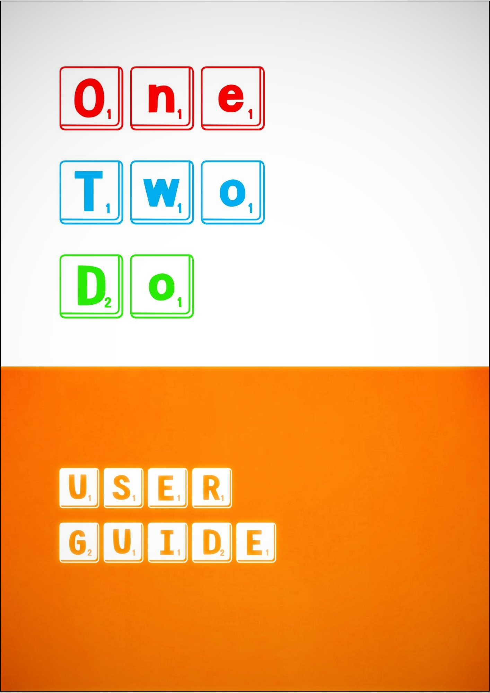
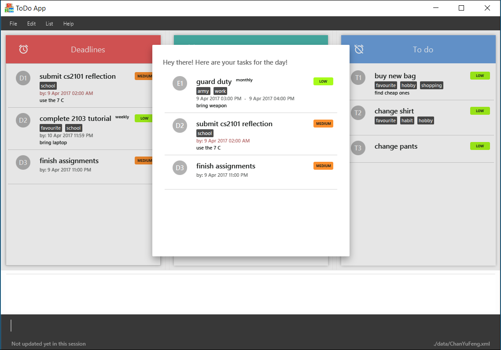
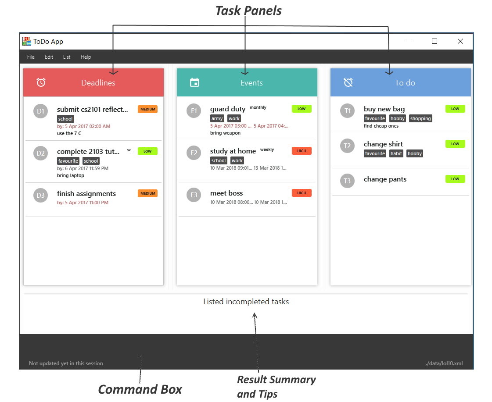
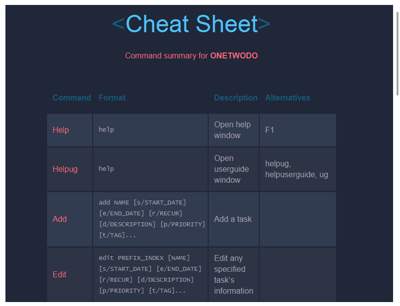
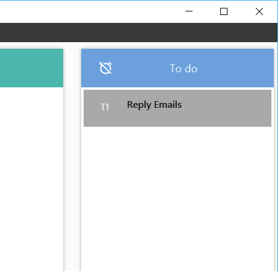
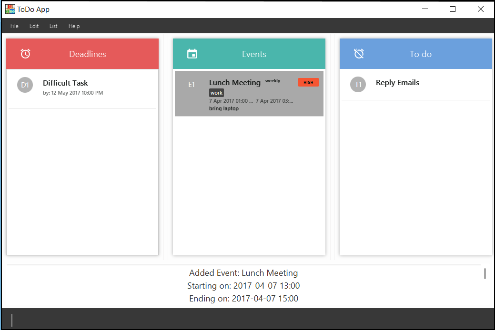
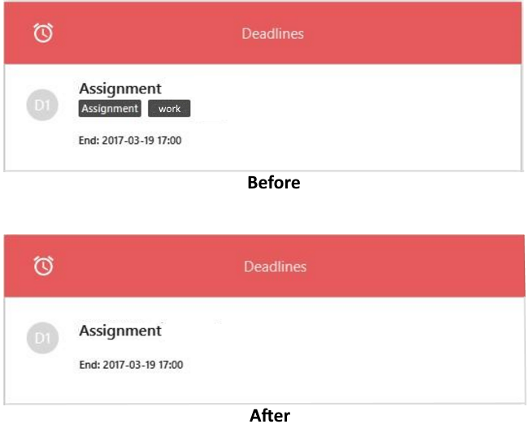
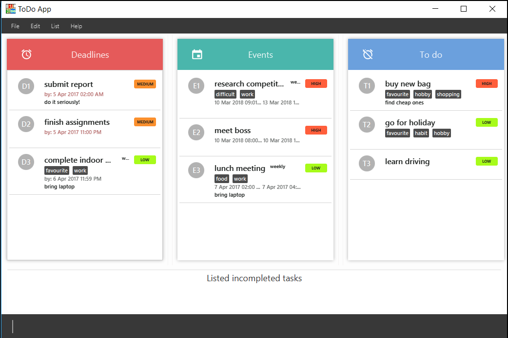
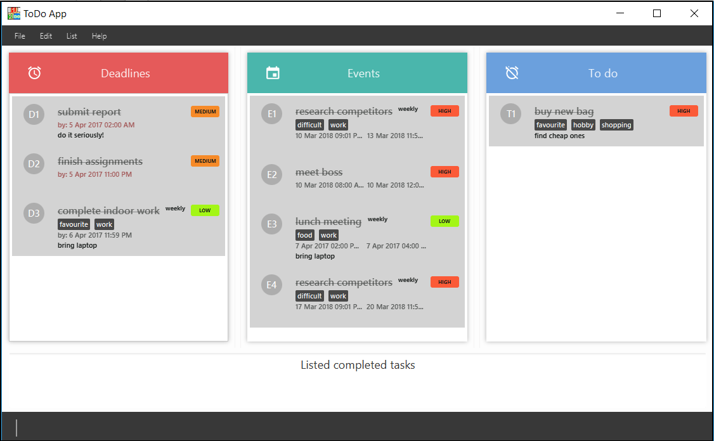
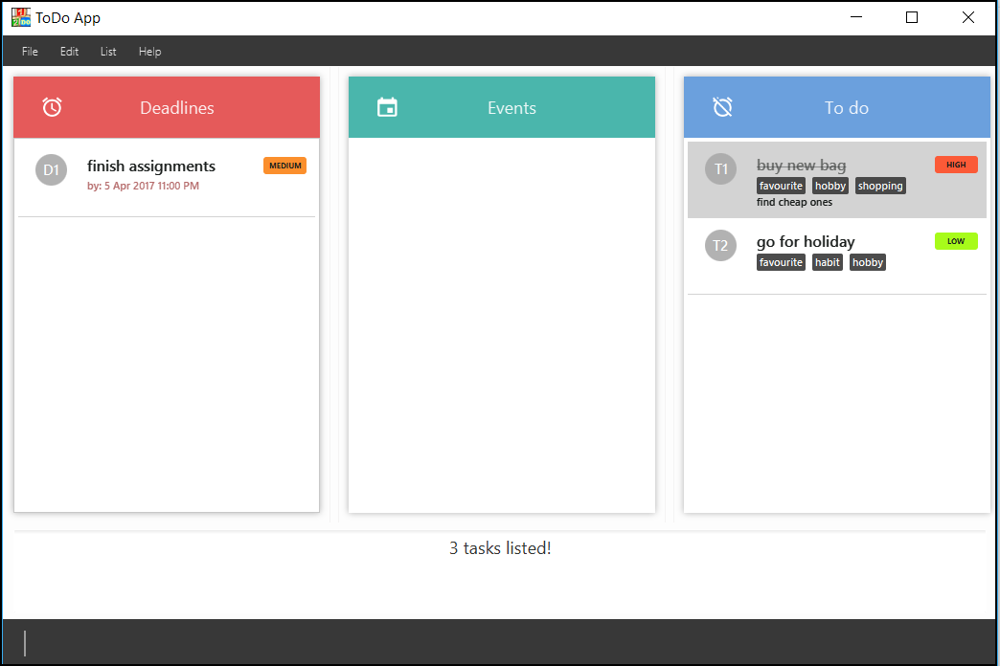

Having trouble keeping track of the tasks you need to do? Looking for a simple yet effective task manager to help you organise your day? OneTwoDo is what you need!
OneTwoDo helps you to manage your events, deadlines, and other to-do tasks so that you can spend more time completing tasks instead of managing them.
OneTwoDo has a simple and clean interface, so that with one glance you can have a clear idea of your tasks at hand.
OneTwoDo is designed to be keyboard-friendly. By simply typing commands in one line of text, OneTwoDo will faithfully execute your wish. You do not need to worry about clicking multiple buttons or links.
OneTwoDo is also extremely flexible. It is smart enough to understand various command formats and shortcuts.
Get started with OneTwoDo today!
Before using OneTwoDo, please ensure that you have installed Java version 1.8.0_60 or later as the application does not work with earlier Java 8 versions.
Start your OneTwoDo journey by downloading the latest OneTwoDo.jar from the releases tab. Download OneTwoDo directly into the home folder you want to use for the app.
You can start OneTwoDo by simply double-clicking the icon!
Figure 1: OneTwoDo User Icon
Congratulations, you are all set up!
After you have started OneTwoDo, you will see our welcome screen. With one glance, you can view all your tasks for the day.

Figure 2: Welcome Screen
You can now proceed to add or modify your tasks in OneTwoDo's main User Interface.

Figure 3: OneTwoDo User Interface
You will see the following sections in our User Interface:
Your tasks are separated into 3 categories:
Deadline - This panel displays tasks with an end date but no start date.Event - This panel displays tasks with a start date and an end date.To-do - This panel displays tasks with neither a start date nor an end date.Let us assume that you are a busy professional. The following scenarios illustrate how you could use the commands in OneTwoDo, although these examples could very well be applied to anyone who wants to better manage their tasks with OneTwoDo.
helpYou want to start using OneTwoDo to organize your meetings and projects more efficiently. However, being new to this application, you may need some guidance. Do not worry, simply type help and a concise command summary window will pop up to clear your confusion.
>> help
Figure 4: Command Summary Window
After viewing the command summary, you may want to find out more about the special features and commands offered by OneTwoDo. Try entering the command help ug or help userguide and our informative user guide will open up for you to explore.
>> help ug
>> help userguide
- You can press the ↑ or ↓ arrow keys to scroll up or down the window without using your mouse!
- Simply type any other key to close the popup window.
addAs a professional, you have an overwhelming number of emails to reply to whenever you are free. Add this to-do task into OneTwoDo so you will not forget!
>> add Reply Emails  Figure 5: Add a to-do
Sometimes, your manager issues you an important task with a strict deadline. Key it into OneTwoDo before you forget! This time, indicate the task's deadline as well.
>> add Difficult Task e/12-May-2017 10pmYour manager emails you that there will be an important lunch meeting from 1-3pm tomorrow. Key it into OneTwoDo, but this time, also indicating the duration. You can choose to input more detailed information related to any task as well.
>> add Lunch Meeting s/tmr 1pm e/tmr 3pm
>> add Lunch Meeting s/tmr 1pm e/tmr 3pm r/weekly d/bring laptop p/high t/work
Figure 6: Add event task with detailed info
add NAME [s/START_DATE] [e/END_DATE] [r/RECUR] [d/DESCRIPTION] [p/PRIORITY] [t/TAG]...
Refer to the Command Format section below if you do not understand the command format.
s/refers to the starting date / time.
e/refers to the ending date / time.
r/refers to the recurring period of the task. It can bedaily,weekly,monthlyoryearlyd/refers to the description of the task.p/refers to the priority level of the task. It can behigh(h),medium(m) orlow(l).t/refers to the task's tag. A task can have any number of tags.
editYour manager has just postponed the meeting to tomorrow, 2-4pm. Simply use the edit command to update your task!
>> edit e1 s/tmr 2pm e/tmr 4pmThe command above will edit your task at the specified PREFIX_INDEX e1. The edit command allows you to edit any field of your task easily.
When editing tags, all existing tags of the task that were set previously will be replaced. You can remove all the tags of a task by typing t/ without specifying any tags after it.
>> edit e1 t/
Figure 7: Before and after tags removal
edit PREFIX_INDEX [NAME] [s/START_DATE] [e/END_DATE] [r/RECUR] [d/DESCRIPTION] [p/PRIORITY] [t/TAG]...
Refer to the Command Format section below if you do not understand the command format.
listHaving so many tasks you need a way to display only the tasks that you need to see. The list command lets you view tasks according to your specified criteria, allowing you to filter and sort them to your liking.
>> list s/today e/next weekThe above command will filter out all the tasks you need to do from today till next week. However, you might also want compare which tasks are more crucial and hence needs to be completed earlier. This is where changing the order using the option o/ makes it convenient for you.
>> list o/priority
Figure 8: Sort by priority
Sometimes you may be so busy that you have forgotten if you had replied an important email. In times like this when you need to review the tasks you have completed, simply type in:
>> list doneAll your completed tasks are listed! You may feel a sense of satisfaction after seeing all the tasks you have accomplished, but it looks like you have not replied the email.

Figure 9: Filter all completed tasks
list [DONE_STATUS] [s/START_DATE] [e/END_DATE] [o/ORDER] [p/PRIORITY] [t/TAG]...
Refer to the Command Format section below if you do not understand the command format.
o/refers to order that the tasks are sorted by.- You can sort by
priority,alphanumericanddateTime.- You can also filter and sort your tasks with multiple parameters. Only tasks that satisfy the filtering criteria will be shown.
- E.g.
list s/today e/next week o/dateTime p/high t/work
findYour manager assigns you to research about "bags that people buy on birthdays". Perhaps you have trouble remembering the exact words you added in that task? If you had only remembered the keywords "birthday", "shopping" or "assignment", simply use the find command and any tasks matching those keywords will be listed out for you.
>> find birthday shopping assignmentfind KEYWORD [MORE_KEYWORDS]...
- Shows a task if any word in its name, description, or tags matches any of the keywords

Figure 10: Find task
selectIf you want to view a task's description that, use this command. A popup window containing the name and description of task selected will be shown. To view more details about a task with the PREFIX_INDEX e2, simply type:
>> select e2doneCompleted an assignment ahead of time? Give yourself a pat on the back, and type done to mark the task as completed. This command marks a task at the specified PREFIX_INDEX as completed.
>> done t1undoneSomtimes requirements change and you may have realised that a completed task still has parts that are undone. Simply mark that task as undone with this command, which marks a task at the specified PREFIX_INDEX as uncompleted.
>> undone t1deleteYour manager had unfortunately assigned you to work overtime, and you cannot make it home in time for your birthday celebration. Type delete to remove your celebration plans from OneTwoDo. This command removes the task at the specified PREFIX_INDEX.
>> delete e2undoDid you delete a high priority task by accident? Keep calm, type undo, and OneTwoDo will restore that important task!
>> undoredoAfter reversing your actions using undo, you realize that it is actually safe to delete. Simply type redo, and that not-so-important task will disappear once again from OneTwoDo!
>> redosaveBy default, your task data is saved in a file named todolist.xml in the data folder. However, you can change the location and name of the file with this command. Type save and the filepath after that. Remember to use the .xml file extension at the end of the file name. If a file with the same name already exists, type overwrite to replace the existing file.
>> save myStorage.xml
>> save overwrite myStorage.xmlexportIf you want to export your current task data to an .xml file, type export and the filepath after that. Remember to use the .xml file extension at the end of the file name. If a file with the same name already exists, type overwrite to replace the existing file.
>> export storageName.xml
>>` export overwrite storageName.xmlimportWhen you want to display data from a saved file, type import and filepath after that. Remember to use the .xml file extension.
>> import storageName.xmlclearYou have finally quit your job, but there are so many added task that needs to be deleted. No problem! Simply type clear and start your OneTwoDo journey again on a new note!
>> clearexitAfter adding all your tasks to OneTwoDo, you want to exit OneTwoDo to actually complete those tasks. Simply type exit to close the application.
>> exitfind, or help).A command option specifies additional information needed by the command.
s/, t/, etc), followed by data to be specified after the forward slash if there are any. (e.g. s/tomorrow 0900). add Go home p/high d/after class is the same as executing add Go home d/after class p/high).[ ] are optional.... (ellipses) after them can be specified multiple times (e.g. t/Schoolwork t/CS2103).| (the pipe symbol) means that either option on the left or right should be used.A command parameter is an UPPER_CASE word representing required data for a command word or its options. Some common examples include:
NAMEPREFIX_INDEXe, d, or t, represents Event, Deadline and To-Do categories respectively) and category index (a positive integer, e.g. 1, 2, 3..).START_DATEEND_DATE.END_DATESTART_DATE.OneTwoDo accepts most date and time formats, including:
Refer to http://natty.joestelmach.com/doc.jsp for a full list of supported formats.
| Command | Format | Description | Alternatives |
|---|---|---|---|
| Help | help |
Open help window | F1 |
| Help ug | help ug |
Open this userguide | help ug, help userguide |
| Add | add NAME [s/START_DATE] [e/END_DATE] [r/RECUR] [d/DESCRIPTION] [p/PRIORITY] [t/TAG]... |
Add a task | |
| Edit | edit PREFIX_INDEX [NAME] [s/START_DATE] [e/END_DATE] [r/RECUR] [d/DESCRIPTION] [p/PRIORITY] [t/TAG]... |
Edit any specified task's information | |
| List | list [DONE_STATUS] [s/START_DATE] [e/END_DATE] [o/ORDER] [p/PRIORITY] [t/TAG]... |
List specified tasks in specified order | Ctrl+Shift+D, Ctrl+Shift+U, Ctrl+Shift+A (list Done, Undone and All respecively) |
| Find | find KEYWORD [MORE_KEYWORDS]... |
Find tasks with keywords | |
| Select | select PREFIX_INDEX |
Select a task to view | |
| Done | done PREFIX_INDEX |
Archive the specified task | |
| Undone | undone PREFIX_INDEX |
Unarchive the specified task | |
| Undo | undo |
Undo previous action | Ctrl+U |
| Redo | redo |
Redo previous action | Ctrl+R |
| Save | save [overwrite] FILE_PATH |
Save file to specified location | |
| Export | export [overwrite] FILE_PATH |
Export file to specified location | |
| Import | import FILE_PATH |
Import file to be used | |
| Delete | delete PREFIX_INDEX |
Delete specified task | |
| Clear | clear |
Clear all data in OneTwoDo | |
| Exit | exit |
Quit the program | Ctrl+E |
Q: How do I transfer my data to another computer?
A: Use the export command to export out the storage. Transfer the storage file via any means (thumb drive, email, etc) and use the import command on another computer to import the storage file.
Q: What type of date and time format can I use?
A: OneTowDo support a variety of formats. You can checkout some of the more common formats above. For complete list of format, checkout the Natty website: http://natty.joestelmach.com/doc.jsp.
Q: How do I save my task data in OneTwoDo?
A: OneTwoDo will save your data automatically every time you execute a command.
Q: What is the difference between find and list command?
A: The find command helps you search for a particular task based on the keywords you remember. The list command helps you to filter and sort the tasks in OneTwoDo.
Q: Which commands will I be able to undo?
A: You can only undo the commands that modify the data of OneTwoDo. The 6 commands that you can undo are: add, delete, edit, clear, done, and undone.
Q: What is the difference between the done and delete command?
A: The delete command will remove the selected task from OneTwoDo. The done command will archive the selected task into the done category. In this way, you can still keep track of the tasks that have been done by using the command list done.